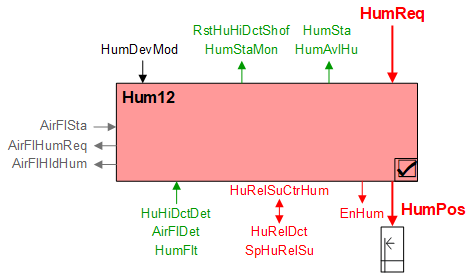
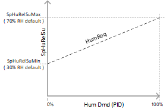

加湿器，供给湿度控制（Hum12）
Overview
应用功能》Humidifier 12, supply humidity control" (Hum12）调节加湿器，将水分添加到供应气流中，以将管道中的湿度水平调节到设定值（基于房间湿度水平）。需求信号被映射到送风湿度设定值。模拟输出 (HumPos) 命令阀门或发送至封装加湿器。
主要特点：
- Analog output control of valve or packaged humidifier
- Binary output enable/disable (optional)
- Cascade control (supply air duct humidity setpoint driven by room humidity setpoint)
- Equipment status input
- Equipment safety input
- Shut-off for high duct humidity
- Humidifier operation status
- Humidifier interlocks
Humidification – Issues of concern
潮湿空气中的冷凝可能会出现在意想不到的地方。湿气穿过建筑物迁移并进入外墙和建筑材料层之间。隐藏在墙壁内的凝结水可能是一场灾难。
值得关注的问题包括：
- Water spray where it is not needed (for example, water collection inside duct)
- Water spray when it is not needed (for example, seasonal high humidity)
- Ineffective high limit control, duct air
- Bends and changes in the duct; obstructions in the duct
- Ineffective temperature control (too cold air causes condensation)
 CAUTION
CAUTION

潮湿危害
建筑控制中的加湿会带来财产损失和不安全状况的风险。没有加湿管理背景或责任的人员必须遵守以下规定：
- DO NOT select room humidity setpoints.
- DO NOT select which modes enable and disable humidification.
- DO NOT pick the method for high limit control in the duct.
- DO NOT choose not to apply high limit control – send RFI if it is not in the spec.
- DO NOT alter dispersion tube Location or Pitch. If instructions are unclear contact the Humidifier Representative.
- DO NOT jumper anything in the package unit without written authorization from Humidifier Representative.
- DO NOT leave the Humidity system energized and untested.
- DO NOT energize Humidifier before the device has been commissioned.
- On all of these points, follow the spec. If the spec does not specify, then you must send an RFI.
Function
基本功能：将请求信号（通常来自房间湿度控制器）通过设备模式开关传递到输出对象。

| 命令或请求（或相关） |
| 条件或状态或可用性的通知 |
| 设备模式 |
| 互锁（内部信号，不是 BACnet 对象；有关其他信息，请参阅互锁部分） |


Device mode:设备模式的输入信号是多状态值。
HumDevMod支持以下状态：
- Off
- Control mode
DXR 自动选择“控制模式”，除非工厂模式 = 关闭，在这种情况下，HumDevMode 也关闭。加湿器功能在房间级加湿控制 AF 中进行了更详细的指定，其中可以为每个房间操作模式单独配置加湿（请参阅 HumCtlxx）。
HumDevMode 可以通过中央命令覆盖以启用 /disable 加湿（例如，季节性调整）。
NOTICE

请勿将设备模式覆盖为完全打开
设备模式多状态对象 HumDevMod 包括“完全打开”的枚举。
如果 HumDevMod 设置为完全打开，加湿功能将被禁用/设置为关闭。
- The Device mode selection for "Fully open" should not be used.
- Do not override Device mode object to Fully open.
Interlocks
房间自动化联锁是协调 HVAC 设备之间交互的内部信号。它们在 ABT 站点或 Web 界面中不可见，但与它们关联的参数可见。有关影响联锁功能的参数的提示，请参阅注释列。
信号 | 类型 | 导演。 | 描述 | 评论 |
|---|---|---|---|---|
AirFlSta | 布尔值 | In | 气流状态 | 气流监控启用参数 (EnMonAirFlSta) 的默认设置为“是”。 |
AirFlHumReq | 布尔值 | 出去 | 加湿器的风量要求 | 可配置 DlyOn 时间以及开启、关闭级别。 |
AirFlHldHum | 布尔值 | 出去 | 加湿器的气流保持 | 可配置 DlyOff 时间和开启、关闭级别。 |
Available signal
“可用”信号二进制对象 (HumAvlHu) 指示加湿设备是否可供使用。当 HumDevMod 关闭或加湿器因高湿度输入或设备故障输入而关闭时，该值设置为 false（否则 HumAvlHu 为 true）。当 HumAvlHu 为假时，房间加湿 PID 控制器被禁用，以防止积分累积。
Cascade control loop
管道相对湿度设定值 – Hum12 通过在配置的最小和最大湿度限值之间缩放房间湿度请求信号 (HumReq) 来计算管道相对湿度设定值 (SpHuRelSu)。

HumReq 用作 Hum12 中级联送风湿度 PID 控制器 (HuRelSuCtrHum) 的输入。 HuRelSuCtrHum 将 SpHuRelSu 与管道传感器 (HuRelDct) 的当前值进行比较，任何差异都用于增加 /decrease 模拟输出信号 (HumPos)。
如果使用管道相对湿度传感器 (HuRelDct) 并且出现故障，则其执行方式就像高湿度二进制输入信号 (HuHiDctDet) 处于活动状态一样。
Safety inputs
- HuHiDctDet – High duct humidity detector (BI)
- HuRelDct – Duct relative humidity (AI)
- AirFlDet – Air flow detector (BI)
- HumFlt – Humidifier fault (BI)
Hum12 有两个用于检测高管道湿度的选项（二进制输入 HuHiDctDet 或模拟输入 HuRelDct）。 HuRelDct 允许通过配置送风相对湿度设定值 (SpHuRelSu) 来设置高相对湿度水平。
可以通过设置 EnMonAirFlSta = Yes（默认）来使用气流状态的联锁图引脚 (AirFlSta)，但可以忽略它 (EnMonAirFlSta = No)，因为可以使用硬线输入 (AirFlDet)，并且被认为更明确。如果两者都使用，则两者都必须报告气流证明，加湿器才能正常工作。
如果硬线高湿度输入信号处于活动状态（HuHiDctDet = 警报、OR、HuRelDct > SpHuRelSu），则加湿器操作将停止。该信号可配置为锁存或非锁存。
如果信号配置为锁定，即使信号不再有效，加湿器状态 (HuSta) 也将保持在高湿度。在这种情况下，必须将重置对象“重置高风道湿度关闭”手动重置为“就绪”，然后加湿器才能恢复运行。如果信号配置为非锁定，则加湿器操作将在信号不再有效后立即恢复。
要配置锁存信号，请将布尔参数 RstHuHiDctShof 设置为手动。对于非锁定，将其设置为自动。
NOTICE
如果硬线高湿度输入信号处于活动状态（Hu__VAR_000__ = 警报、__VAR_001__、Hu__VAR_002__ > Sp__VAR_003__），则加湿器操作将停止。该信号可配置为锁存或非锁存。
在规范或 RFI 中确认锁存或非锁存操作所需的操作。
- 锁定操作（手动复位）
- 非锁定操作（自动复位）
Humidifier operating status (HuSta)
一个多状态计算值对象，通知用户（建筑操作员、BAS 技术人员、调试代理）加湿器的运行状态以及导致运行状态的原因。
HuSta（加湿器状态） | 描述 | |
|---|---|---|
1 | 普通的 | 当没有启用其他状态时的默认状态。 |
2 | 离开 | 当设备模式关闭时发生。 |
3 | 管道湿度高 | 当通过硬线输入检测到高管道湿度开关时发生。如果存在管道湿度传感器，则可选。状态应锁定，直到手动重置（可配置）。 当管道湿度传感器超过可配置的高管道湿度值时发生。状态应锁定，直到手动重置（可配置）。 |
4 | 无风量流量 | 当通过硬线输入未检测到气流时发生（推荐）。 当内部信号 AirFlSta 报告无气流证明时发生（次要，可通过配置禁用）。 |
5 | 一般故障 | 当通过硬线输入检测到一般故障时发生。 |
Configuration
 Parameters
Parameters
描述 | 范围 | 默认值 |
|---|---|---|
Switch-on point for air volume flow hold humidification | SwiOnAflHldHum | 4 [%] |
Hysteresis for air volume flow hold humidification | HysAirFlHldHum | 2 [%] |
Switch-off delay for hold for air flow humidification | DlyOfAflHldHum | 30 [s] |
Switch-on point for air volume flow humidification request | SwiOnAflHumReq | 4 [%] |
Hysteresis for air volume flow humidification request | HysAirFlHumReq | 2 [%] |
Switch-on delay for air volume flow humidification request | DlyOnAflHumReq | 30 [s] |
Enable monitoring for air volume flow state 0:No | EnMonAirFlSta | 1:Yes |
Reset high duct humidity shutoff 0:Auto（非锁定配置，自动复位） | RstHuHiDctShof | 1:Manual |
Maximum supply air relative humidity setpoint | SpHuRelSuMax | 70 [% 相对湿度] |
Minimum supply air relative humidity setpoint | SpHuRelSuMin | 30 [% 相对湿度] |
High duct relative humidity setpoint | SpHuRelHiDct | 85 [% 相对湿度] |
Interface
界面 | 描述 | 类型 | 参考号 | 拥有者 |
|---|---|---|---|---|
HumPos | Humidifier position | AO | ◉ | Room segment / Device |
EnHum | Enable humidifier 0:Off | BO | ◉ | Room segment / Device |
HumSta | Humidifier state 1:Normal | ACalcVal | ● | - |
HumStaMon | Humidifier monitoring state | EvtEnr | ● | - |
RstHuHiDctShof | Reset high duct humidity shutoff 1:Ready | MTrgVal | ● | - |
HuRelDct | Duct relative humidity | AI | ◉ | Room segment / Device |
SpHuRelSu | Supply air relative humidity setpoint | APrcVal | ● | - |
HumDevMod | Humidifier device mode 1:Off | MPrcVal | ● | - |
HuRelSuCtrHum | Supply air relative humidity controller for humidification | 控制器 | ● | - |
HumReq | Humidification request | ACalcVal | ● | - |
HumAvlHu | Humidifier available for humidification 0:No | BCalcVal | ● | - |
HuHiDctDet | High duct humidity detector 0:Normal | BI | ◉ | Room segment / Device |
AirFlDet | Air flow detector 0:Inactive | BI | ◉ | Room segment / Device |
HumFlt | Humidifier fault 0:Normal | BI | ◉ | Room segment / Device |
Engineering and commissioning
请参阅上面的注意事项。
建议采用硬接线气流防护。
建议使用硬连线高管道湿度开关。
监视加湿器状态的事件注册对象默认使用通知类别 8。建议根据特定的报警要求配置通知类别。
加湿器状态对象用于加湿器运行的故障排除和诊断。建议放在图形上。
故障排除提示：如果您不知道加湿器为何在应打开时关闭，请检查设备模式 (HumDevMod) 的值并参阅上面的设备模式部分。